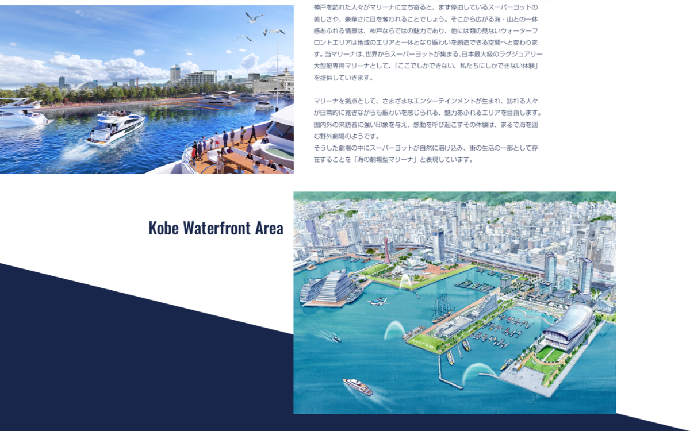
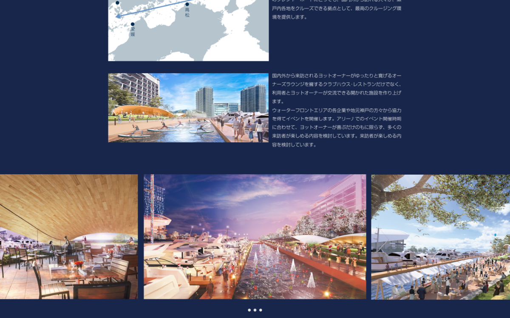

制作概要
Outline
神戸ウォーターフロント開発の象徴として始動した「海の劇場型マリーナ」プロジェクト、SUPER YACHT BASE KOBEの先行公開用ティザーページ。六甲山と瀬戸内が織りなす圧倒的なロケーション価値とラグジュアリーな未来像を提示し、国内外のスーパーヨット関係者・ステークホルダーに向けた期待感の醸成と先行リード獲得を目的に制作しました。
Target
国内外のスーパーヨットオーナー、マリーナ開発・観光レジャー関連企業、瀬戸内クルーズ関係者
Period & Role
デザイン：2週間（Photoshop / Figma）
コーディング：2週間（HTML5 / CSS3 / JavaScript / PHP）
担当領域：サイト設計 / デザイン / コーディング / CMS（WordPress）
Purpose
新プロジェクトの先行告知とブランドプレステージの確立、構想パースやバースレイアウト図の公開によるスケール感の伝達、および事前問い合わせの獲得
内容詳細
Detail
「海の劇場型マリーナ」
神戸から始まる壮大な物語を予感させる、ドラマチックなビジュアル設計。


完成前のプロジェクトだからこそ、パースや夕景のCGビジュアルをダイナミックに配置し、「六甲山と瀬戸内。スーパーヨットが織りなす壮大な物語が今、ここに始まる」という開発ストーリーを強く印象づける構成に。
構想段階の重要情報を図解やイラストを交えて整理。情報が限られたティザー期においても、訪れたユーザーがプロジェクトの規模とポテンシャルを直感的に把握できるよう設計しています。
静止画中心のページでありながら、スクロールに合わせたフェードやスケール演出を取り入れ、高級感あふれる劇場型マリーナの世界観をデジタル上で演出しました。